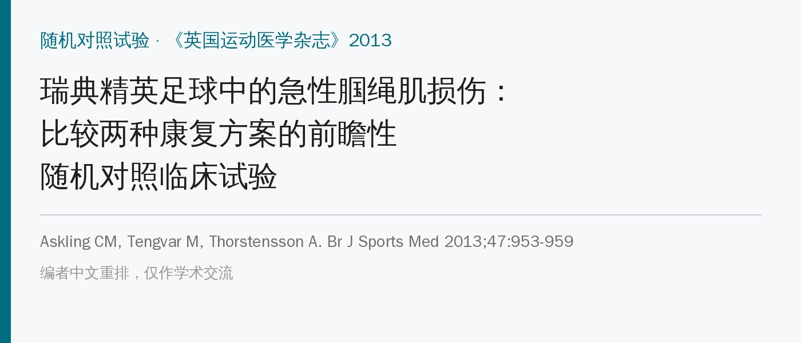
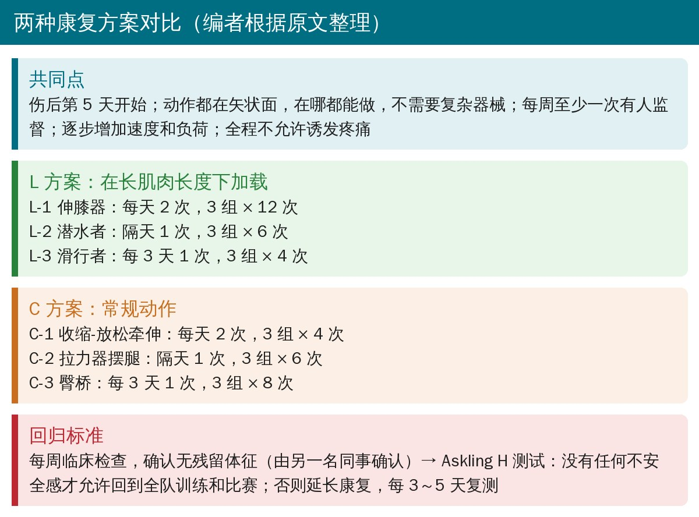
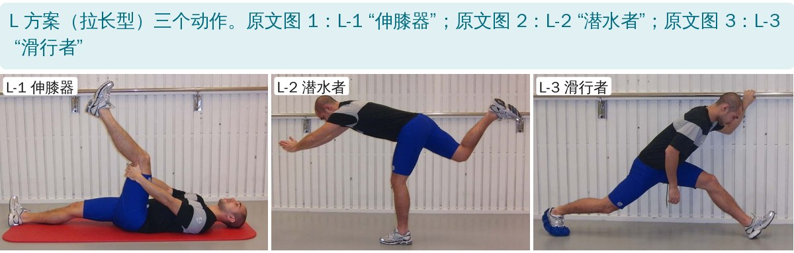
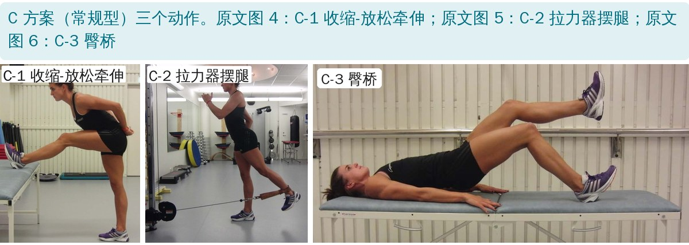
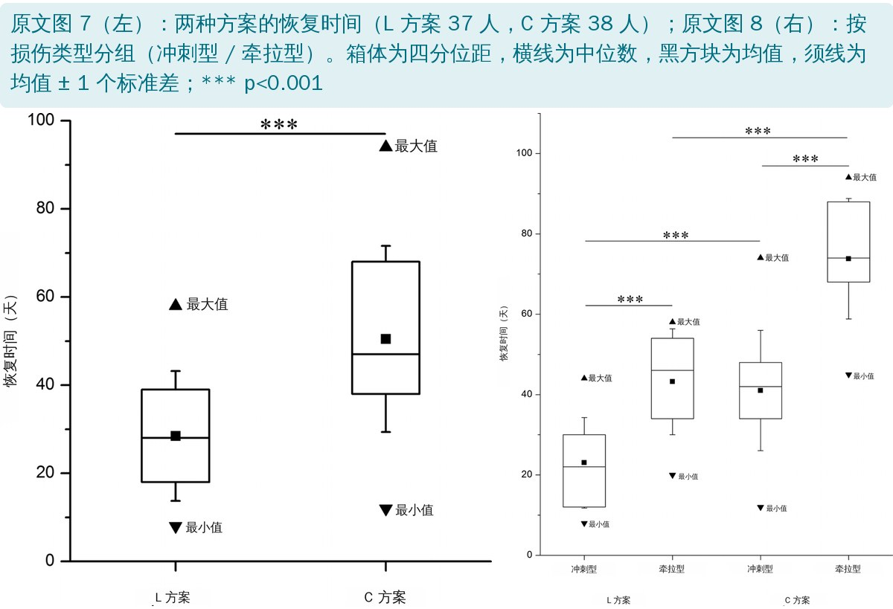
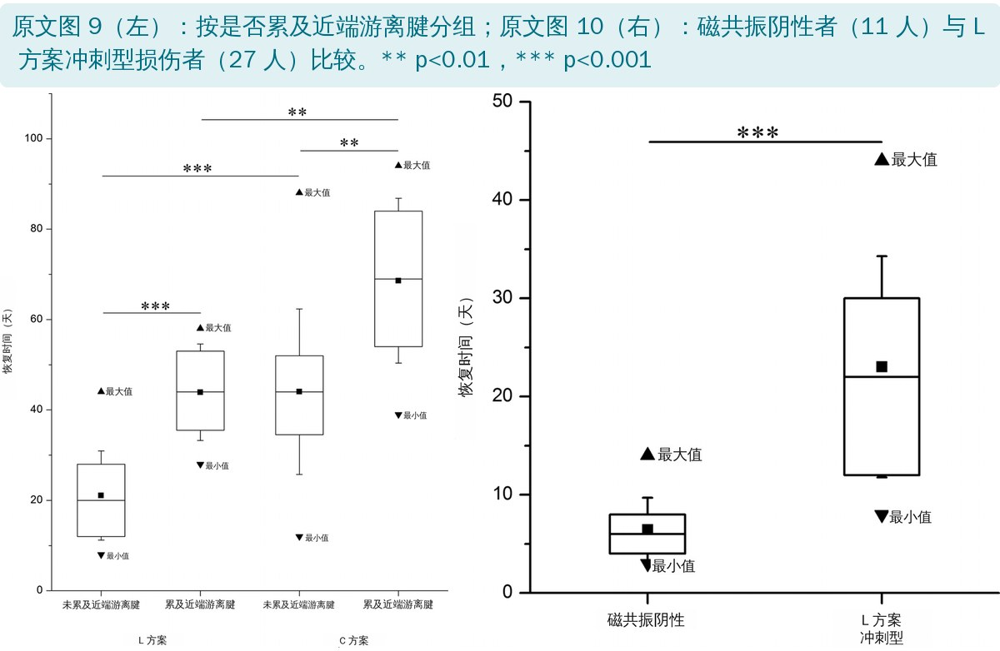

🔖原文信息（编者中文重排）
📚 文献信息
▪ Askling CM, Tengvar M, Thorstensson A. Acute hamstring injuries in Swedish elite football: a prospective randomised controlled clinical trial comparing two rehabilitation protocols. Br J Sports Med. 2013;47(15):953-959. doi:10.1136/bjsports-2013-092165
▪ 作者来自瑞典体育与健康科学学院、卡罗林斯卡学院，第一作者 Askling 是 H 测试和“冲刺型 / 牵拉型”损伤分类的提出者
▪ 研究类型：前瞻性随机对照试验，75 名磁共振证实的急性腘绳肌损伤足球运动员（编辑推荐文章）
腘绳肌损伤是欧洲职业足球最常见的单一伤病：一支 25 人的球队每赛季约有 5 次腘绳肌损伤，损失 80 多天；而且再伤率高，多半说明康复不够或回场太早。当时还没有一项在精英足球中比较不同康复方案的随机试验。
有观点认为，在较长的肌肉-肌腱长度下练腘绳肌，尤其是同时模拟髋、膝两个关节的动作，可能是关键。这项研究就把“拉长型”方案和“常规型”方案放在一起比。
• 受试者：2009 年 1 月至 2011 年 9 月，瑞典两个最高级别联赛为主的 75 名球员（女性约 8%），均为训练或比赛中后侧大腿突然疼痛，经磁共振证实
• 入选体征：触诊局部痛、被动直腿抬高时局部痛，加腘绳肌等长收缩时痛更重；排除近 6 个月同侧腘绳肌伤、外力撞击、腰背问题和怀孕
• 分组：按性别和损伤类型分层，随机分到 L 方案（37 人）或 C 方案（38 人）；另有 11 人临床像腘绳肌伤但磁共振阴性，全部做 L 方案、单独观察
• 损伤类型：冲刺型（高速跑、加速时受伤）和牵拉型（高踢腿、劈叉、铲球等大幅度动作时受伤），46 人有比赛录像辅助判断
• 主要结局：从受伤到能完全参加全队训练、可被选入比赛名单的天数；回场后随访 12 个月记录再伤

🔖两种方案对比
两套方案都在伤后第 5 天开始，每套 3 个动作：第 1 个以柔韧为主，第 2 个是力量加躯干 / 骨盆稳定，第 3 个是专项力量；全部在矢状面，任何时候都不允许诱发疼痛，随时间增加速度和负荷。

🔖L 方案三个动作
• L-1 伸膝器：仰卧，双手抱住伤侧大腿使屈髋约 90°，慢慢伸膝到刚要出现疼痛之前；每天 2 次，3 组 × 12 次
• L-2 潜水者：像模拟跳水：伤侧腿站立、膝屈 10°～20°，从躯干直立开始屈髋前倾，双臂前伸，抬起的腿尽量伸髋、膝保持 90°，骨盆保持水平；动作复杂，开始要很慢；隔天 1 次，3 组 × 6 次
• L-3 滑行者：一手扶支撑，躯干直立，两腿稍分开，体重全部压在伤侧脚跟上、膝屈 10°～20°；另一腿穿低摩擦袜向后滑，在疼痛前停住，用双臂（而不是伤腿）拉回起始位；通过加大滑动距离和速度进阶；每 3 天 1 次，3 组 × 4 次

🔖C 方案三个动作
• C-1 收缩-放松牵伸：伤侧脚跟放在接近最大高度的稳定支撑上，膝屈约 10°；脚跟下压 10 秒，放松 10 秒，再慢慢前倾上身 20 秒进入新位置；每天 2 次，3 组 × 4 次
• C-2 拉力器摆腿：健侧单腿站，伤侧腿膝屈 20°～30°，对抗拉力器或弹力带前后摆髋；隔天 1 次，3 组 × 6 次
• C-3 臀桥：仰卧，双脚跟着地、屈膝 90°，慢慢抬放骨盆；逐步把体重移到伤腿、加大伸膝角度，最终只用微屈的伤腿支撑；每 3 天 1 次，3 组 × 8 次
• 同一位研究者每周做临床检查（柔韧性、力量、触诊），直到没有残留体征，并由另一名同事确认
• 然后做Askling H 测试（仰卧位快速主动直腿抬高的动态测试）：只要球员感到任何不安全感，就不允许回到全队训练或比赛，延长康复，每 3～5 天复测
• L 方案 13 人（35%）、C 方案 27 人（71%）在 H 测试中感到不安全，平均因此多练了 7 天（3～14 天）

🔖原文图 7、8：总体和按损伤类型的恢复时间
• 恢复时间：L 方案平均 28 天（8～58 天），C 方案 51 天（12～94 天），缩短 23 天、约 45%；去掉 H 测试多出的天数，仍是 25 天比 46 天
• 按损伤类型：冲刺型 L 方案 23 天、C 方案 41 天；牵拉型 L 方案 43 天、C 方案 74 天；两种类型中 L 方案都显著更快
• 牵拉型比冲刺型慢得多：不分方案平均 59 天对 32 天，长 84%
• 再伤：12 个月内只有 1 例，发生在 C 方案（伤后 6 个月，冲刺型、股二头肌长头）

🔖原文图 9、10：是否累及近端游离腱；磁共振阴性者
• 累及近端游离腱的损伤恢复更慢；两种方案中都是 L 方案更快
• 预后指标：最痛点越靠近坐骨结节、水肿近端离坐骨结节越近、水肿越长，恢复时间越长（与方案无关）
• 损伤部位：股二头肌长头占 69%，冲刺型 94% 在股二头肌长头；半膜肌占 21%，是牵拉型最常见部位（76%）
• 磁共振阴性的 11 人平均 6 天（3～14 天）回场，显著快于 L 方案冲刺型的 23 天
| 项目 | L 方案（37 人） | C 方案（38 人） | p 值 |
|---|---|---|---|
| 年龄（岁） | 25 ± 5（24，16～37） | 25 ± 6（25，15～37） | 0.738 |
| 身高（cm） | 180 ± 5（180，170～198） | 181 ± 7（180，160～196） | 0.278 |
| 体重（kg） | 77 ± 6（76，64～90） | 79 ± 10（78，50～113） | 0.310 |
| 女 / 男（%） | 8 / 92 | 8 / 92 | 0.973 |
| 精英 / 非精英（%） | 89 / 11 | 90 / 10 | 0.968 |
| 冲刺型 / 牵拉型（%） | 73 / 27 | 71 / 29 | 0.853 |
| 未累及 / 累及近端游离腱（%） | 68 / 32 | 74 / 26 | 0.561 |
| 水肿近端到坐骨结节（mm） | 60 ± 72（40，−30～240） | 67 ± 80（40，−40～280） | 0.738 |
| 损伤长度（mm） | 176 ± 99（190，30～400） | 169 ± 78（180，15～325） | 0.865 |
| 最痛点到坐骨结节（cm） | 10 ± 7（8，1～26） | 10 ± 8（8，1～32） | 0.903 |
原文表 1：两组基线资料（均值 ± 标准差（中位数，范围）或百分比；连续变量用 Mann-Whitney U 检验，比例用卡方检验）
| 指标 | L 方案 r | L 方案 p | C 方案 r | C 方案 p |
|---|---|---|---|---|
| 水肿近端到坐骨结节（mm） | −0.736 | <0.001 | −0.717 | <0.001 |
| 损伤长度（mm） | 0.817 | <0.001 | 0.320 | <0.05 |
| 最痛点到坐骨结节（cm） | −0.832 | <0.001 | −0.859 | <0.001 |
原文表 2：恢复时间与磁共振、触诊指标的 Spearman 相关
| 项目 | 磁共振阴性（11 人） | L 方案冲刺型（27 人） | p 值 |
|---|---|---|---|
| 年龄（岁） | 23 ± 7（21，15～36） | 25 ± 5（26，16～37） | 0.302 |
| 身高（cm） | 181 ± 6（179，174～192） | 180 ± 4（179，170～189） | 0.961 |
| 体重（kg） | 75 ± 7（76，60～86） | 77 ± 6（76，64～90） | 0.759 |
| 女 / 男（%） | 9 / 91 | 11 / 89 | 0.854 |
| 冲刺型 / 牵拉型（%） | 100 / 0 | 100 / 0 | — |
| 精英 / 非精英（%） | 100 / 0 | 96 / 4 | — |
原文表 3：磁共振阴性组与 L 方案冲刺型损伤者的基线资料
• 没有盲法：同一位作者（L 方案和 H 测试的设计者）每周监督康复、做临床检查和 H 测试，作者自己也承认增加了偏倚风险
• 主要结局有主观成分：能否回场取决于 H 测试中球员自己是否“感到不安全”，而 C 方案中有 71% 的人因此延长康复
• 两套方案的训练量并不相当：作者说“尽量相等”，但 L-1 每天 72 次、C-1 每天只有 24 次，L 方案是否更快可能部分来自更大的训练量
• 随机方法未交代：没有说明随机序列如何产生、分配是否隐藏
• 只看了回场时间：没有比较力量、柔韧性、比赛表现；再伤只有 1 例，无法比较两种方案的预防效果
• 优点：样本相对大、无失访、按损伤类型分层，动作简单、不需要器械，便于推广
• 再伤率算错：75 人中 1 例再伤是 1.3%，原文写成 0.8%（即使算上 11 名磁共振阴性者也是 1.2%）
• 图 9 人数写反：图注写 L 方案“累及或未累及近端游离腱”分别 25 人和 12 人，但表 1 显示 L 方案 68% 未累及，即未累及 25 人、累及 12 人
• 磁共振阴性组前后矛盾：方法和图 10 说 11 人全部做 L 方案，讨论又说其中 4 人 5 天内就回场、根本没做 L 方案（方案第 5 天才开始）
• 训练量“尽量相等”与处方不符：见上文，L-1 与 C-1、L-3 与 C-3 的重复次数差别明显
• 独立确认者是否盲法说法不一：方法说由“独立的同事”确认，讨论说是“独立、盲法的测试者”
• 统计描述：作者说数据非正态，却以均值 ± 标准差作为主要描述；按亚组做多次 Mann-Whitney 比较，也没有多重比较校正
• 小错：页脚 DOI（bjsports-2013-092676）与补充材料链接中的 DOI（bjsports-2013-092165）不一致；“讨论”标题拼成 DISUSSION
• 急性腘绳肌损伤早期就开始“拉长位”训练：伸膝器、潜水者、滑行者三个动作都能在场边做，伤后约第 5 天开始，全程无痛
• 先分型再估预后：问清楚是冲刺时还是大幅度牵拉时受伤；牵拉型、近端游离腱受累、最痛点靠近坐骨结节、水肿长的，恢复都要更久
• 回场前加一道“不安全感”关卡：临床体征消失后再做 H 测试，球员有任何犹豫就再练几天
• 磁共振阴性不等于没事，但通常一周左右就能回场
• 注意训练量：L-1 每天两次，量不小，进阶时以不痛为原则
欢迎关注悦美力公众号，获取更多物理治疗的专业知识！
📄参考文献：
Askling CM, Tengvar M, Thorstensson A. Acute hamstring injuries in Swedish elite football: a prospective randomised controlled clinical trial comparing two rehabilitation protocols. Br J Sports Med. 2013;47(15):953-959. doi:10.1136/bjsports-2013-092165
原文版权归 BMJ 出版集团及作者所有，未标注开放许可协议。本文为学术交流用的中文解读：原文图 1～6 动作照片直接引用并加中文标签，图 7～10 英文标注改为中文，表 1～3 为中文翻译，方案对比卡为编者整理。版权归原作者与期刊，如有侵权请联系删除。